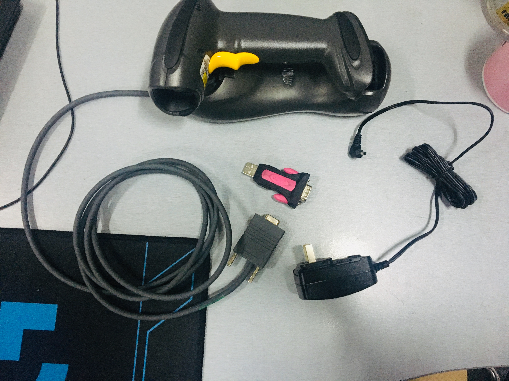
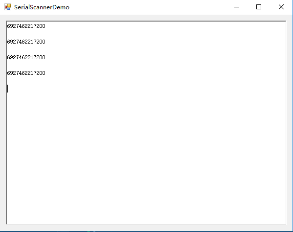

原文出处:本文由博客园博主Pater.Pan提供。
原文连接:https://www.cnblogs.com/pandefu/p/10795284.html
原文连接:https://www.cnblogs.com/pandefu/p/10795284.html
串口扫描枪的简单实现
基于串口通讯的扫描枪的实现,主要借助SerialPort类,表示串行端口资源。实现很简单:
工具:usb转RS232转接头/个,扫描枪/套,
扫描枪串口接入转接头,转接头插电脑

接下来具体代码实现


1 using System;
2 using System.Collections.Generic;
3 using System.ComponentModel;
4 using System.Data;
5 using System.Drawing;
6 using System.Linq;
7 using System.Text;
8 using System.Threading.Tasks;
9 using System.Windows.Forms;
10 using System.Net;
11 using System.IO.Ports;
12 using System.Threading;
13
14 namespace SerialScannerDemo
15 {
16 public partial class SerialScanner : Form
17 {
18 public SerialScanner()
19 {
20 InitializeComponent();
21 }
22
23 private void Form1_Load(object sender, EventArgs e)
24 {
25 InstanceSerialPort();
26 }
27
28 /// <summary>
29 /// 实例化串行端口资源
30 /// </summary>
31 private void InstanceSerialPort()
32 {
33 //实例化串行端口
34 SerialPort serialPort = new SerialPort();
35 //端口名 注:因为使用的是USB转RS232 所以去设备管理器中查看一下虚拟com口的名字
36 serialPort.PortName = "COM5";
37 //波特率
38 serialPort.BaudRate = 9600;
39 //奇偶校验
40 serialPort.Parity = Parity.None;
41 //停止位
42 serialPort.StopBits = StopBits.One;
43 //数据位
44 serialPort.DataBits = 8;
45 //忽略null字节
46 serialPort.DiscardNull = true;
47 //接收事件
48 serialPort.DataReceived += serialPort_DataReceived;
49 //开启串口
50 serialPort.Open();
51 }
52
53 /// <summary>
54 /// 接收数据
55 /// </summary>
56 /// <param name="sender"></param>
57 /// <param name="e"></param>
58 void serialPort_DataReceived(object sender, SerialDataReceivedEventArgs e)
59 {
60 try
61 {
62 SerialPort serialPort = (SerialPort)sender;
63 //开启接收数据线程
64 Thread threadReceiveSub = new Thread(new ParameterizedThreadStart(ReceiveData));
65 threadReceiveSub.Start(serialPort);
66 }
67 catch (Exception ex)
68 {
69 SetMessage(ex.Message);
70 }
71 }
72
73 private void ReceiveData(object serialPortobj)
74 {
75 try
76 {
77 SerialPort serialPort = (SerialPort)serialPortobj;
78
79 //防止数据接收不完整 线程sleep(100)
80 System.Threading.Thread.Sleep(100);
81
82 string str = serialPort.ReadExisting();
83
84 if (str == string.Empty)
85 {
86 return;
87 }
88 else
89 {
90 SetMessage(str);
91 }
92 }
93 catch (Exception ex)
94 {
95 SetMessage(ex.Message);
96 }
97 }
98 /// <summary>
99 /// 添加记录
100 /// </summary>
101 /// <param name="msg"></param>
102 private void SetMessage(string msg)
103 {
104 richTextBox1.Invoke(new Action(() => { richTextBox1.AppendText(msg + "\r\n"); }));
105 }
106 }
107 }
注:因为使用的是USB转RS232 所以去设备管理器中查看一下虚拟com口的名字
接下来测试
找一张带有条码的包装袋或者印有条码的纸扫描

测试完成
这里说明一下
serialPort中有6个读的方法
Read();ReadLine(); ReadByte();ReadChar();这几个读方法是同步读
ReadExisting();ReadTo();这两个方法是异步读
在测试过程中发现 执行读方法后 从缓冲区读出的数据长度不够 会拼接到下一次的读结果中,所以代码中在读之前使用了Thread.sleep()方法使线程阻塞,使得从缓冲区读出的数据完整
顺便说一下,基于以太网的扫描枪的实现,其实将扫描枪当做是一个客户端,扫描完成一次相当于发送了一次基于TCP或者UDP的请求,使用的socket服务器略加改变就能实现
c#Socket服务器与客户端的开发(1)
源码:
链接：https://pan.baidu.com/s/1mdcj_I8W0RTi-PIs1YBdhA
提取码：xs8d